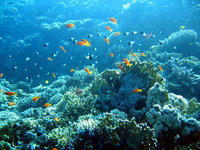

Quel pays autre que la France peut s'enorgueillir d'avoir sur son territoire des terres glacées antarctiques, des forêts tropicales primaires inhabitées, d'immenses récifs coralliens ou encore des lagons parmi les plus grands du monde et des mangroves intactes sur des centaines de kilomètres… ? Aucun !
 |
Grâce à la diversité et aux richesses naturelles de ces territoires, la France détient une chance unique et une lourde responsabilité. Nous cumulons le triste privilège d'être au cinquième rang des pays accueillant le plus grand nombre d'oiseaux au statut précaire, d'avoir sur notre territoire la plus importante plage de ponte de tortues luth au monde et l'un des patrimoines biologiques les plus originaux et les plus menacés au plan mondial. De plus, l’insularité de la plupart de ces territoires a conduit les espèces vivantes à évoluer de façon spécifique au cours des millénaires ; ce qui les rend rares à l'échelle planétaire. |
Aujourd’hui, cette extraordinaire richesse est menacée. La liste rouge de l’UICN (Union Internationale pour la Conservation de la Nature), publiée en 2007, en atteste puisqu’elle place la France parmi les 10 pays hébergeant le plus grand nombre d’espèces animales et végétales menacées (641 au total), classement principalement dû aux espèces d’outre-mer.
La mission contribue à la conservation du patrimoine naturel guyanais